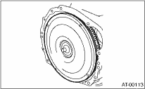

1. Remove the transmission assembly from vehicle body. 
2. Pull out the torque converter assembly and oil pump shaft horizontally.
CAUTION:
Do not scratch the inner surface of the bushing in oil pump shaft.

3. Remove the input shaft.
NOTE:
When the torque converter clutch assembly is removed, the input shaft will also come off.

4. Remove the clip from torque converter clutch assembly.